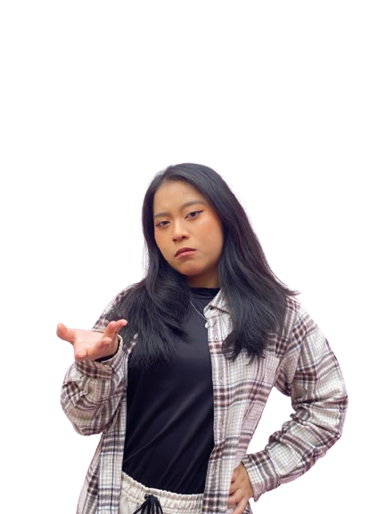
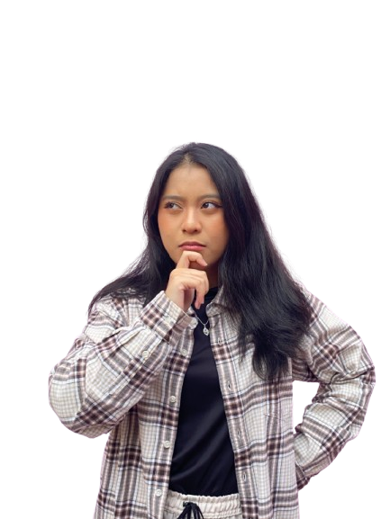
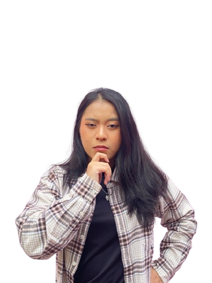
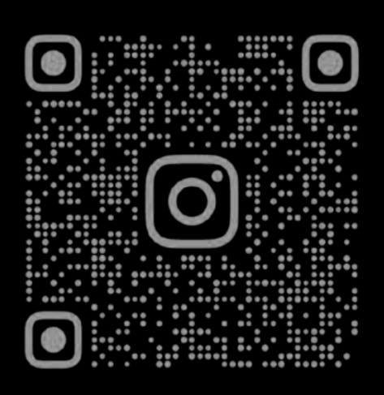

WELCOME TO
KREATORSADARTREN.COM
Dapatkan informasi tentang tekanan sosial dan kenali gejala
stress
pada diri anda yang berdampak pada diri anda sebagai kreator

APA ITU TEKANAN
EKSISTENSI SOSIAL MEDIA
Tekanan eksistensi di media sosial adalah bentuk kecemasan yang muncul ketika seseorang merasa harus selalu terlihat aktif, relevan, dan "bernilai" di dunia digital. Tekanan ini sering kali membuat pengguna, terutama konten kreator, mengaitkan jumlah like, komentar, atau views dengan kualitas diri mereka. Media sosial mempromosikan versi terbaik dari kehidupan orang lain, sehingga standar yang dihadirkan menjadi tidak realistis dan memicu perbandingan sosial yang kuat di antara para penggunanya.

Bagaimana tren dan algoritma
memengaruhi psikologis kreator
Kondisi ini diperkuat oleh fungsi algoritma di platform seperti Instagram, TikTok, dan YouTube yang terus berubah. Algoritma memprioritaskan konten yang sering diunggah, mengikuti tren, dan menghasilkan engagement tinggi. Akibatnya, konten kreator sering merasa harus terus memproduksi konten baru, beradaptasi dengan fitur terbaru, dan mempertahankan ritme posting agar tidak kehilangan visibilitas. Tekanan akibat tren dan algoritma ini dapat menyebabkan kecemasan, terutama saat performa konten tidak sesuai harapan, sehingga kreator merasa tidak cukup kreatif atau kurang "populer" dibanding yang lain.
MUNCULNYA GEJALA BURNOUT
PADA KONTEN KREATOR
Pengaruh lanjutan dari tekanan ini adalah burnout, yaitu kondisi kelelahan emosional, fisik, dan mental akibat tuntutan aktivitas yang terus menerus. Burnout pada konten kreator bisa muncul berupa kehilangan motivasi untuk membuat konten, menurunnya produktivitas, hilangnya kesenangan dalam berkarya, serta rasa lelah yang tidak hilang meskipun kreator telah beristirahat. Tanda-tanda ini penting untuk dikenali karena jika dibiarkan, dapat memengaruhi kesehatan mental dan kualitas hidup kreator secara keseluruhan.

MUNCULNYA RASA PERBANDINGAN
DIRI DENGAN KREATOR LAIN
Salah satu pemicu yang lain dari tekanan eksistensi dan burnout adalah kecenderungan membandingkan diri dengan kreator lain. Di media sosial, orang sering membandingkan diri mereka dengan versi terbaik dari kehidupan orang lain yang telah diedit dan dikurasi. Perbandingan ini dapat menurunkan rasa percaya diri, meningkatkan rasa tidak cukup baik (inadequacy), serta memperkuat perasaan FOMO (fear of missing out). Ketika seorang kreator terus menerus melihat kesuksesan kreator lain, muncul rasa bahwa apa yang mereka hasilkan selalu kurang memuaskan, sehingga tekanan psikologis pun semakin meningkat.
Dan ikuti informasi kreator sadar tren
dengan, follow :

@KREATORSADARTREN2026